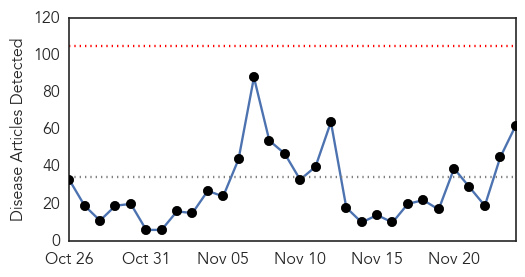

Ebola
30-Day Web Trend
0 alerts, 0 warnings

30-Day Twitter Trend
7 alerts, 17 warnings

Article Locations

Article Confidences

Top Articles:
- 1.000
- Liberia Has First Ebola Fatality in Months as Outbreak Crops Back Up
- 1.000
- Boy dies of Ebola in Liberia, first fatality in months
- 1.000
- Deadly Ebola virus has returned to Liberia and nobody understands why
- 1.000
- Ebola reappears in Liberia, leaving the question: Why?
- 1.000
- Liberia under watch as Ebola makes third appearance
- 1.000
- Boy dies of Ebola in Liberia, first fatality in months
- 1.000
- Liberia Confirms 15-year-old Boy Died from Ebola, First Death in Months : News : News Every Day
- 1.000
- Boy Dies Of Ebola In Liberia, First Fatality In Months
- 1.000
- Ebola – The Wind That Blows; Will It Stop?
- 1.000
- Liberia records 1st Ebola death since July - KSBY.com
- 1.000
- Puzzling Ebola Death Shows How Little We Know About The Virus
- 1.000
- Boy dies of Ebola in Liberia, first fatality in months
- 1.000
- Ebola Kills First Victim in Re-emergence
- 1.000
- Teenage boy dies of Ebola in Liberia
- 1.000
- Ebola is Back in Liberia: Why Are We Struggling to Eradicate It?
- 1.000
- Ebola Re-Emerge in Liberia; CDC Investigates Return of Disease
- 1.000
- Sahara Reporters
- 1.000
- Boy Dies Of Ebola In Liberia
- 1.000
- Liberia Records 1st Ebola Death Since July
- 0.999
- Liberia records first Ebola death since July
- 0.999
- First Ebola Death Recorded In Liberia Since June
- 0.999
- Why Experts Blame WHO For The 'Needless' Deaths Caused By Ebola Virus In West Africa
- 0.999
- Boy (15) is first Ebola fatality in Liberia since July
- 0.999
- Liberia Records Another Ebola Case As 15 Year-Old-Boy Dies From The Virus
- 0.999
- Teenager dies as Ebola returns to Liberia: official
- 0.999
- Amid Failure and Chaos, an Ebola Vaccine
- 0.999
- Ebola crisis: World Health Organization response criticised in damning report
- 0.999
- Liberia Sees First Ebola Death Since July -- NYMag
- 0.998
- Ebola crisis: Liberia boy dies after fresh cases
- 0.997
- In the World
- 0.997
- Liberia monitors over 150 Ebola contacts
- 0.997
- Liberia records first Ebola death since July
- 0.997
- Ebola Kills 15-Year-Old Boy in Liberia
- 0.994
- An indictment of Ebola response
- 0.992
- Liberia just had its first Ebola death since July
- 0.980
- Health Highlights: Nov. 24, 2015
- 0.973
- Sierra Leone Embassy in Germany Observes prayers for Ebola Victims
- 0.966
- LIBERIA: Health Ministry Identifies 139 Contacts In Latest Ebola Case
- 0.964
- House of Chiefs strategizes for prevention of Ebola
- 0.964
- Ebola Kills 15-Year-Old Boy in Liberia
- 0.960
- Sierra Leone: Post-Ebola assistance to the vulnerable underway
- 0.955
- WHO Director-General addresses Regional Committee for Africa
- 0.940
- Ebola will always return unless we develop the tools to end it
- 0.917
- Boy dies of Ebola in Liberia, first such fatality in months
- 0.896
- Boy dies of Ebola in Liberia in first such fatality in months
- 0.893
- Theft of protective health suits from Paris hospital raises possibility terror groups could launch chemical, bacteriological warfare
- 0.872
- 'This virus is tearing people apart': Dallas Ebola victim's relatives shunned as ...
- 0.866
- News in Brief 24 November 2015 (AM)
- 0.802
- Vintage photos show the terrifying first expeditions into the Congo to track down Ebola
- 0.780
- Samuel Boland, who worked on Ebola front lines, wins Marshall Scholarship
Showing top 50 articles...
Top Tweets:
- 0.998
- US hospitals are giving people FREE Ebola virus vaccines too free ebola
- 0.971
- FREE Ebola Virus Vaccines US hospitals give people FREE Ebola details https://t.co/btsQVaaZ4Q Hannity
- 0.936
- Ebola - 153 Contacts Under Surveillance - Three Confirmed Cases - https://t.co/odlAdaqDHB ebola
- 0.923
- Ebola Outbreak Shows 'Major Reforms' Needed - https://t.co/Xt3Q8Bojj3 ebola
- 0.922
- Puzzling Ebola Death Shows How Little We Know About The Virus - NPR https://t.co/2giUCKeLrQ ebola EVD
- 0.909
- BREAKING EBOLA! 3 People have Ebola hundreds quarantined https://t.co/snnsEct17a
- 0.909
- BREAKING EBOLA! 3 People have Ebola hundreds quarantined https://t.co/snnsEct17a …
- 0.905
- did you know 3 people just got ebola this week!
- 0.901
- Ebola crisis: Liberia boy dies after fresh cases - BBC News https://t.co/GD5VzHyC6V ebola EVD
- 0.900
- Teenage Boy Dies Of Ebola In Liberia After Months Without New Cases - https://t.co/ZsSp9zurkc ebola
- 0.891
- @BretBaier Ebola 3 people diagnosed with Ebola this week several hundred quarantined https://t.co/eVHW7jqA6E
- 0.887
- Boy dies of Ebola in Liberia first such fatality in months - Reuters https://t.co/QtKvXGyF3g ebola EVD
- 0.887
- Boy dies of Ebola in Liberia first fatality in months - Reuters https://t.co/USYpqrQOPN ebola EVD
- 0.881
- Ebola global response was 'too slow' say health experts - https://t.co/sdcwhj9ARa ebola
- 0.877
- Unprecedented Ebola epidemic highlights worldwide need for stronger systems for disease tracking response prevention. CFRLive
- 0.871
- 15-yr-old died of Ebola in Liberia; this is the first virus-related fatality since country was declared Ebola-free https://t.co/h4Oj5SYFUW
- 0.869
- BREAKING EBOLA! 3 People have Ebola hundreds quarantined https://t.co/snnsEct17a refugeeswelcome refugees refugeecrisis NoRefugees
- 0.868
- Global health experts accuse WHO of 'egregious failure' on Ebola - https://t.co/63BTpHsLCN ebola
- 0.865
- House of Chiefs strategizes for prevention of Ebola - GhanaWeb https://t.co/3QHyySu0wS ebola EVD
- 0.865
- Ebola: campagne contre l'essai vaccinal au Cameroun - https://t.co/TzvUIbtBs3 ebola
- 0.844
- Boy 15 dies of Ebola in Liberia - The Advertiser https://t.co/yBVFHoL2cr ebola EVD
- 0.826
- Breaking! Ebola is Back! - https://t.co/Ckms6Y7TBx ebola
- 0.821
- US officials headed to Liberia to seek cause of latest Ebola cases - https://t.co/fuBwK5efKT ebola
- 0.817
- Ebola reappears in Liberia leaving the question - https://t.co/qLY1UKrFMy ebola
- 0.817
- Ebola reappears in Liberia leaving the question - https://t.co/aQYTEBkSJb ebola
- 0.810
- are any exposed to Ebola?
- 0.781
- BREAKING EBOLA KILLS teenager TODAY! hundreds quarantined https://t.co/vBbeQKC50z ThanksgivingWithBlackFamilies Ebola
- 0.769
- BREAKING EBOLA! 3 People have Ebola hundreds quarantined https://t.co/snnsEct17a ebola BlackFridayIn3Words https://t.co/0B7dV2LILE
- 0.768
- The USA Response to Ebola: Status of the FY2015 Emergency Ebola Appropriation https://t.co/q6PNEJhQnP
- 0.761
- Global Health Experts Say Response To Ebola Was Full Of Failures - https://t.co/HmdghSt5fG ebola
- 0.757
- Epidemiology of Epidemic Ebola Virus Disease in Conakry and Surrounding Prefectures Guinea 2014–2015 https://t.co/Et4zLbyNRm
- 0.738
- Opinionator | Amid Failure and Chaos an Ebola Vaccine - New York Times (blog) https://t.co/RjxbPdhY4F ebola EVD
- 0.737
- Liberia seeks US help to determine cause of new Ebola cases - https://t.co/Tcj59ktzsd ebola
- 0.733
- RT: Will public health failures during Ebola response lead to meaningful change? I'll ask. Today 1PM ET htt…
- 0.729
- ebola virus vaccine will be ready soon already being tested on americans here in the US
- 0.723
- CDP workers honored for Ebola treatment training program - Anniston Star https://t.co/uiN6Nbl1pC ebola EVD
- 0.722
- Ebola Virus RNA Stability in Human Blood and Urine in West Africa’s Environmental Conditions https://t.co/cHmvrlVJ51
- 0.702
- Ebola: Health experts create roadmap to prevent next global health crisis https://t.co/5hfQVTUWQu
- 0.696
- BREAKING! a teenager has died from Ebola! story posting soon! ebola Hannity BREAKING https://t.co/AQRNVPTLfQ
- 0.674
- Ebola lesson 3: All countries need enhanced ability to respond to health threats incl. hospital preparedness in U.S. CFRLive
- 0.664
- 15-Year-Old Boy Is Liberia's First Ebola-Related Fatality Since July - NPR https://t.co/mJ8CQfEBXb ebola EVD
- 0.664
- 15-Year-Old Boy Is Liberia's First Ebola-Related Fatality Since July - NPR https://t.co/4NK6sgYTLb ebola EVD
- 0.659
- RT: How did the 2014 Ebola Outbreak affect Liberia Sierra Leone and Guinea? - The CDC https://t.co/zaiPBsZZd1 https://t.…
- 0.645
- How to grow an Ebola vaccine with a tobacco plant - https://t.co/A9RVSzZ2MT ebola
- 0.634
- Sure hope is right: that the horrific toll of the West African Ebola outbreak will lead to important changes in global health.
- 0.627
- Ebola Virus Persistence in Semen Ex Vivo https://t.co/2Mmwk0FuPt
- 0.626
- RT: Ebola lesson 3: All countries need enhanced ability to respond to health threats incl. hospital preparedness in U.S. CF…
- 0.572
- ChopUp Games Releases New Mobile Game to Promote Ebola Education - TechCabal https://t.co/C7MzK8VxPM ebola EVD
- 0.570
- Timeline 2014: How we lost control of the Ebola virus in 2014 https://t.co/T4fiqXBfLy
- 0.563
- Fox News is a sewer: ISIS Ebola and the network's familiar fear-mongering ... - Salon https://t.co/LGDDXdA8R8 ebola EVD
Showing top 50 tweets...
Cholera
30-Day Web Trend
1 alerts, 1 warnings

30-Day Twitter Trend
0 alerts, 0 warnings

Article Locations

Article Confidences

Top Articles:
- 0.994
- H5N1: Haiti: 64 cholera cases, 15 deaths in Anse-à-Pitres (updated)
- 0.982
- WHO vaccination campaign in Iraq
- 0.968
- Over 20 cases of jaundice reported in Mysuru
- 0.906
- Suspected cholera kills two in Bainet
- 0.684
- Learning from Jajarkot- Nepali Times
- 0.521
- Cholera-hit Tanzania cancels independence day celebration
Top Tweets:
- 0.593
- RT: Cholera in Haiti: 9041 deaths have been registered and more than 750000 have been sickened in its grip https://t.co/sdfdEPxS…
- 0.509
- A classification of situations for 5 types of cholera epi & recommendations for use of cholera vaccine. https://t.co/OsTN44eXm2